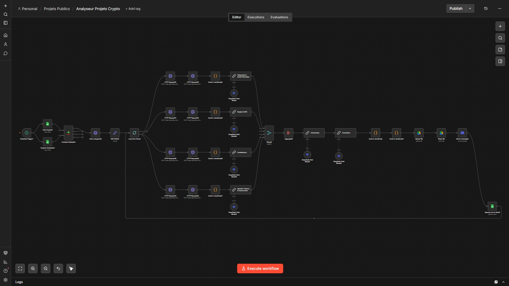

02 — Projets
Ce que j'ai construit
Quelques livrables réalisés après un mois de pratique sur n8n.
Je me tourne de plus en plus vers Claude Code pour construire des projets plus structurés et autonomes — ce portfolio est un exemple concret de mon apprentissage de Claude Code.
Un workflow n8n complet qui prend un token en entrée, lance des recherches web parallèles via Tavily, génère 5 sections d'analyse structurées avec DeepSeek V3 (tokenomics, équipe, investisseurs, narratif, technologie), puis produit un Google Doc formaté envoyé automatiquement sur Discord.

Workflow n8n qui lit une liste de produits depuis Google Sheets, récupère chaque fiche via l'API Shopify, puis génère automatiquement avec Claude 4 éléments SEO distincts : mot-clé principal, balises, description produit et méta description, caractéristiques. Les données sont réinjectées sur Shopify avec des délais pour respecter les limites de l'API.

Workflow n8n qui scrape 3 canaux Telegram publics via HTTP Request, extrait et filtre les actualités des dernières 24h, les agrège, puis génère une newsletter HTML synthétisée par Claude Haiku et l'envoie automatiquement par mail chaque matin.